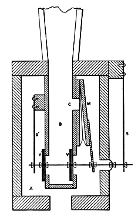
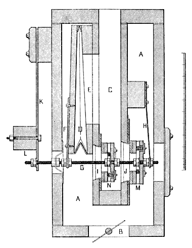
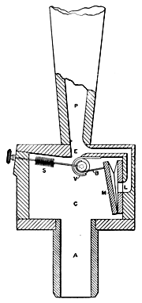

Diaphonic Diapason English

|
Diaphone English Diaphonic Diapason English |
|
Wind-blown organ pipes come in two broad types: flues and reeds. While the Diaphone is in many ways similar to reeds, it is considered to be in a class by itself, sometimes called "valvular". Instead of a reed, it employs a beating palette to produce the vibrations which are amplified and fixed in frequency by a resonator. Unlike beating reeds, the pitch of a Diaphone is not affected by variations in wind pressure. (This is also true of free reeds.) Diaphones are uncommon, and are found most often in theatre organs. Diaphonic pipes are typically only used in the 16' and 32' octaves.
Audsley provides a drawing (reproduced here) of the Diaphone in what he calls "its simplest form" with the following description:
In this treatment we find a likeness to the action of the ordinary striking reed — a likeness which is absent in the more complicated Diaphones in which pneumatic motors are introduced. A is a quadrangular piece of hardwood, bored in the manner shown at B, and firmly attached to the block of the boot C. From this block rises the resonator, which is either inverted pyramidal in form an constructed of wood, or inverted conical in form and made of stout zinc. D is a disc-valve, faced with felt and leather, and carried on the spring E in the manner indicated. The spring E is forked in its lower part, and is held firmly between the sliding pieces shown at F. The spring is regulated by moving these pieces up or down, shortening or lengthening the effective portion connect with the disc-valve. The action of this appliance is simple and resembles that of the ordinary striking reed. When compressed air is admitted from the wind-chest into the boot G it immediately acts on the more exposed surface of the valve D, driving it against the opening of the bore B. The valve rebounds under the action of the spring E, allowing a puff of compressed air to enter the resonator through B. The valve is again closed and again opened, and the action continues so long as the boot is supplied with compressed air. In this, as in all other forms of the Diaphone, the rate of vibration of the valve is controlled by the vibrating column of air within the resonator, and is not affected by increased pressure in the pipe-wind.
While the invention of the Diaphone is commonly attributed to Robert Hope-Jones, he was not actually the first to use the principle in an organ pipe. Wedgwood writes:
It frequently happens in organ building, when the requisite conditions are fortuitously complied with, that a pallet will commence to vibrate rapidly, and it is often within the province of an organist's or organ builder's observation that such a "fluttering pallet," or a Tremulant in a state of rapid vibration, when provided with a resonator in the form of a soundboard or wind trunk, generates tones of considerable power. The safety valves of steamboats constantly act similarly. ... The idea must doubtless have occurred to many builders ... that such phenomena might systematically be adapted to tonal use. An experimental attempt at such adaptation was made in 1888 by Messrs. Blackett & Howden, of Newcastle [England]. The bulk of the apparatus employed was enclosed in a box (15 ins. square for the 16 ft. note). Wind passed into a chamber containing a vibrator in the form of a circular disc fixed on to the loose end of a spring, and so arranged as to beat against a hole in the under side of the resonator, being regulated in pitch and intensity by a sliding bridge and set-screw.  In order to economize space the box was divided into compartments, which were further partitioned into spiral channels. The bore of the channels constantly increased and the apparatus was surmounted by a short bell. By sundry modifications of the scaling and wind pressure, and by the adjustment of the vibrating disc, it was found possible to secure several distinct varieties of tone quality and degrees of power.
It was Hope-Jones who, according to Wedgwood, first developed a really practical stop of this type. He began developing Diaphones in 1893, and in 1894 he took out his first of several patents for stops of this type. The original form, apparently never actually used by Hope-Jones in an organ, was later used by another builder for the Diaphonic Bassoon. The first organ containing a Hope-Jones Diaphone was built in 1896 for Worcester Cathedral, which contained two of these stops, one at 32' pitch and one at 16'. Wedgwood provides a drawing, reproduced here, with the following description:
M is a [pneumatic] motor, to the tail-piece of which is attached a rod bearing the compound and spring valves V, V', working against the springs S, S'. On the admission of wind (under pressure) to the box A, the motor M is caused to collapse, and thereby to open the valves V, V'. Wind then rushes into the chamber B, and, entering the interior of the motor M through the passage C, equalizes the pressure on the motor. The action of the springs now serves to close the valves V, V', and to open out the motor M, whereupon the process is repeated.
Audsley provides a somewhat more detailed drawing (reproduced here) of what appears to be the same style of Diaphone. He describes it as follows:
In [this figure] is given a Longitudinal Section of the mechanical portion of a large Diaphone, showing the full development of Mr. Hope-Jones' system of construction. Diaphones of this kind were inserted in the pedal department of the Organ in Worcester Cathedral in the year 1895, and in the same department of the Organ in McEwan Hall, Edinburgh [Scotland], in 1896. In each case the Diaphone could be drawn of 32 ft. and 16 ft. pitch. In this form we find the three essential parts of the complete Diaphone, viz: (1) a valve set into motion by (2) a motor, which is controlled as to its periodic action by (3) a resonator. In the Longitudinal Section A is the boot or chamber into which the pipe-wind is admitted through the hole B. Formed between the sides of this boot is the channel C, stopped at its lower end, as indicated, and opening at its upper end into a resonator, which is planted on the top board of the boot. D is the motor in the form of a small cunieform bellows, which is placed in communication with the channel C through the oblong opening E. The metal arm F is screwed to the movable board of the motor, and firmly held between nuts on the tapped valve-stem G. The valve-stem is supported at its right end by the slender spring H, in the manner clearly indicated; and at its left end by the spring bar K, to which is bolted the weight L. The valve-stem passes air-tight through the leather purse P. On the valve-stem are securely fixed with double nuts two disc-valves of peculiar construction, the larger one, M, being placed outside the channel C, and the smaller one, N, inside the channel, as shown. Each valve is formed of a disc and a ring of hardwood, connected around their edges, and about 1/4 inch apart, with leather. Three small spiral springs keep the leather edging stretched, while they permit the ring portion of the valve to move when the valve strikes its seat in any sudden fashion. The ring portion is faced with thick felt protected with a covering of leather. The valve-seats are also covered with felt and leather. The peculiar construction of the disc-valves M and N will be thoroughly understood from the illustration. The action of the appliance is as follows: When the compressed air or pipe-wind enters the boot A through the hole B, which is connected with some sort of wind-chest, it immediately exerts its pressure on the motor D, collapsing it sufficiently to move the valve-stem G and open the disc-valves N and M. A puff of compressed air instantly passes into the channel C through the valve ports I and J. For the instant the air in the channel is compressed sufficiently to institute what is practically a state of equilibrium between the air inside and outside the motor D, and the spring bar K draws the motor open and closes the disc-valves. The condensation or puff of compressed air has passed upward into the controlling column of air in the resonator, breaking the equilibrium just alluded to, and allowing the pipe-wind to act on the motor, open the disc-valves, and allow another puff to enter the channel C. The equilibrium is again instituted, and the motor expands, and the valves close. This process continues with perfect regularity, the period of vibration being practically determined by the size of the column of air in the resonator.
Another type of Diaphone, developed by Hope-Jones in 1895, is described by Wedgwood with the illustration reproduced here:
Wind enters at the foot A, charges the chamber C, and acts upon the back of the motor M, in such a manner that this latter is collapsed. In collapsing it moves (through the medium of the thong or flat chain B) the roller valve V, thus allowing the wind in the chamber C to escape through E into the resonator or pipe P. Wind, passing through the channel L, acts upon the motor M in such a manner that the pressure on the inside and outside of the motor is balanced, and the spring S is at liberty to close the roller valve V again. The cyclic process is repeated. The particular function of the roller valve in organ work is to admit wind gradually. ... The smoother the action of the valve, the smoother the tone quality generated. ... This Roller-Valve Diaphone is here described mainly on account of its theoretical interest; it is scarcely a form adapted to practical use.
John Compton made further improvements and refinements to the Diaphone, producing Tibia, Horn, Diapason, and String tones, according to Irwin.
The Diaphone never attained widespread usage, and found a permanent home only in the theatre organ — and in lighthouses as a foghorn. According to Maclean, it proved somewhat unreliable, requiring more careful and frequent servicing than flues and reeds. Audsley also questioned its durability, and claimed that it was almost impossible to secure tonal uniformity throughout a rank of Diaphones pipes.
In addition to the tones listed above, Bonavia-Hunt also mentions Salicional, Dulciana, Violone, and Trombone tones as having been produced by Diaphones, and Wedgwood mentions a diaphonic Clarinet which employed cylindrical resonators. In general its tone has been described as full, commanding, weighty, and smooth, though Grove describes it as always unblending.
Strony reports that on the theatre organ a Diapason is rarely extended below 8' C with flue pipes; instead, Diaphone pipes are usually employed in the 16' and 32' octaves. Two types of Diaphone are used: metal and wood, the latter being louder.
Diaphone 16', Pedal; Irvine Auditorium, University of Pennsylvania, Philadelphia, Pennsylvania, USA; Austin 1926.
Diaphone 16', Pedal; Claremont College, Claremont, California, USA; Estey 1931.
Diaphone 32', 16', Pedal; Worcester Cathedral, Worcester, England; Hope-Jones 1896.
Diaphone 32', 16', Pedal; Town Hall, Melbourne, Australia; Hill, Norman & Beard 1929.
Diaphone 16', Pedal; Auditorium, Ocean Grove, New Jersey; Hope-Jones 1907.
Diaphone 16', Pedal; First Church of Christ, Scientist, San Francisco, California, USA; Kimball 1924.
Would you like to hear what a Diaphone sounds like?
For as little as $10 (US), you can sponsor a page in this Encyclopedia, and help purchase more sound samples!
|
Original website compiled by Edward L. Stauff. For educational use only. Diaphone.html - Last updated 8 May 2008. |
Home Full Index |